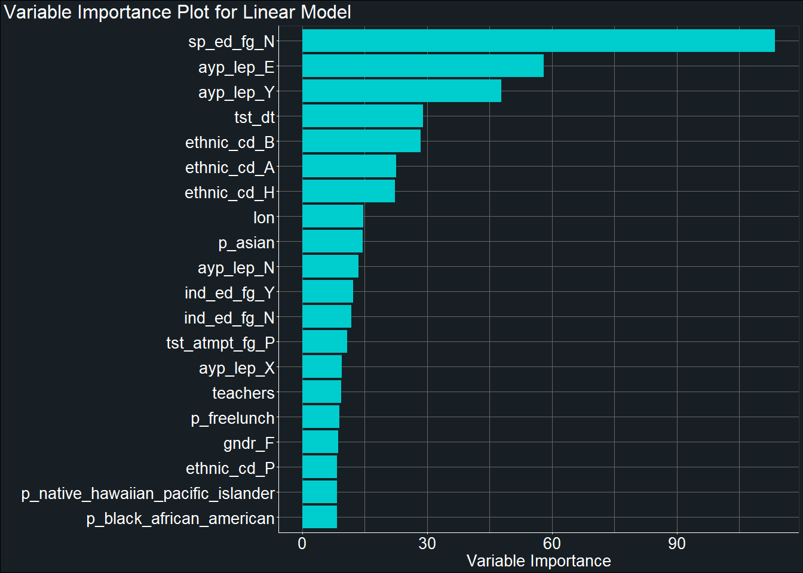

To get a general understanding of how our predictor variables fit our data, we begin by fitting a basic linear regression model to our data akin to stats::lm.
We will use the recipe we have created from our
recipe_1 <- recipe(score ~ ., data_train) %>%
step_mutate(tst_dt = lubridate::mdy_hms(tst_dt)) %>%
update_role(contains("id"), ncessch, sch_name, new_role = "id vars") %>%
step_novel(all_nominal()) %>%
step_unknown(all_nominal()) %>%
step_zv(all_predictors()) %>%
step_normalize(all_numeric(), -all_outcomes(), -has_role("id vars")) %>%
step_BoxCox(all_numeric(), -all_outcomes(), -has_role("id vars")) %>%
step_medianimpute(all_numeric(), -all_outcomes(), -has_role("id vars")) %>%
step_dummy(all_nominal(), -has_role("id vars"), one_hot = TRUE) %>%
step_zv(all_predictors())recipe_1## Data Recipe
##
## Inputs:
##
## role #variables
## id vars 7
## outcome 1
## predictor 45
##
## Operations:
##
## Variable mutation for tst_dt
## Novel factor level assignment for all_nominal()
## Unknown factor level assignment for all_nominal()
## Zero variance filter on all_predictors()
## Centering and scaling for all_numeric(), ...
## Box-Cox transformation on all_numeric(), ...
## Median Imputation for all_numeric(), ...
## Dummy variables from all_nominal(), -has_role("id vars")
## Zero variance filter on all_predictors()temp <- prep(recipe_1)
tidy(temp)## # A tibble: 9 x 6
## number operation type trained skip id
## <int> <chr> <chr> <lgl> <lgl> <chr>
## 1 1 step mutate TRUE FALSE mutate_KOe99
## 2 2 step novel TRUE FALSE novel_H9bZ1
## 3 3 step unknown TRUE FALSE unknown_SlzjT
## 4 4 step zv TRUE FALSE zv_Kc8yv
## 5 5 step normalize TRUE FALSE normalize_vyovv
## 6 6 step BoxCox TRUE FALSE BoxCox_T5cxO
## 7 7 step medianimpute TRUE FALSE medianimpute_cMp9J
## 8 8 step dummy TRUE FALSE dummy_dWBxW
## 9 9 step zv TRUE FALSE zv_DOCLd#novel
tidy(temp, 2) %>%
print(n = Inf)## # A tibble: 32 x 3
## terms value id
## <chr> <chr> <chr>
## 1 gndr new novel_H9bZ1
## 2 ethnic_cd new novel_H9bZ1
## 3 calc_admn_cd new novel_H9bZ1
## 4 tst_bnch new novel_H9bZ1
## 5 migrant_ed_fg new novel_H9bZ1
## 6 ind_ed_fg new novel_H9bZ1
## 7 sp_ed_fg new novel_H9bZ1
## 8 tag_ed_fg new novel_H9bZ1
## 9 econ_dsvntg new novel_H9bZ1
## 10 ayp_lep new novel_H9bZ1
## 11 stay_in_dist new novel_H9bZ1
## 12 stay_in_schl new novel_H9bZ1
## 13 dist_sped new novel_H9bZ1
## 14 trgt_assist_fg new novel_H9bZ1
## 15 ayp_dist_partic new novel_H9bZ1
## 16 ayp_schl_partic new novel_H9bZ1
## 17 ayp_dist_prfrm new novel_H9bZ1
## 18 ayp_schl_prfrm new novel_H9bZ1
## 19 rc_dist_partic new novel_H9bZ1
## 20 rc_schl_partic new novel_H9bZ1
## 21 rc_dist_prfrm new novel_H9bZ1
## 22 rc_schl_prfrm new novel_H9bZ1
## 23 lang_cd new novel_H9bZ1
## 24 tst_atmpt_fg new novel_H9bZ1
## 25 grp_rpt_dist_partic new novel_H9bZ1
## 26 grp_rpt_schl_partic new novel_H9bZ1
## 27 grp_rpt_dist_prfrm new novel_H9bZ1
## 28 grp_rpt_schl_prfrm new novel_H9bZ1
## 29 titlei_status new novel_H9bZ1
## 30 nslp_status new novel_H9bZ1
## 31 virtual new novel_H9bZ1
## 32 sch_name new novel_H9bZ1#unknown
tidy(temp, 3) %>%
print(n = Inf)## # A tibble: 32 x 3
## terms value id
## <chr> <chr> <chr>
## 1 gndr unknown unknown_SlzjT
## 2 ethnic_cd unknown unknown_SlzjT
## 3 calc_admn_cd unknown unknown_SlzjT
## 4 tst_bnch unknown unknown_SlzjT
## 5 migrant_ed_fg unknown unknown_SlzjT
## 6 ind_ed_fg unknown unknown_SlzjT
## 7 sp_ed_fg unknown unknown_SlzjT
## 8 tag_ed_fg unknown unknown_SlzjT
## 9 econ_dsvntg unknown unknown_SlzjT
## 10 ayp_lep unknown unknown_SlzjT
## 11 stay_in_dist unknown unknown_SlzjT
## 12 stay_in_schl unknown unknown_SlzjT
## 13 dist_sped unknown unknown_SlzjT
## 14 trgt_assist_fg unknown unknown_SlzjT
## 15 ayp_dist_partic unknown unknown_SlzjT
## 16 ayp_schl_partic unknown unknown_SlzjT
## 17 ayp_dist_prfrm unknown unknown_SlzjT
## 18 ayp_schl_prfrm unknown unknown_SlzjT
## 19 rc_dist_partic unknown unknown_SlzjT
## 20 rc_schl_partic unknown unknown_SlzjT
## 21 rc_dist_prfrm unknown unknown_SlzjT
## 22 rc_schl_prfrm unknown unknown_SlzjT
## 23 lang_cd unknown unknown_SlzjT
## 24 tst_atmpt_fg unknown unknown_SlzjT
## 25 grp_rpt_dist_partic unknown unknown_SlzjT
## 26 grp_rpt_schl_partic unknown unknown_SlzjT
## 27 grp_rpt_dist_prfrm unknown unknown_SlzjT
## 28 grp_rpt_schl_prfrm unknown unknown_SlzjT
## 29 titlei_status unknown unknown_SlzjT
## 30 nslp_status unknown unknown_SlzjT
## 31 virtual unknown unknown_SlzjT
## 32 sch_name unknown unknown_SlzjT#nzv
tidy(temp, 4) %>%
print(n = Inf)## # A tibble: 1 x 2
## terms id
## <chr> <chr>
## 1 calc_admn_cd zv_Kc8yv#create model
lin_mod <- linear_reg() %>%
set_engine("lm") %>%
set_mode("regression")
#create workflow
lin_workflow <- workflow() %>%
add_recipe(recipe_1) %>%
add_model(lin_mod)
#run model
start_rf <- Sys.time()
lin_fit <- fit_resamples(
lin_workflow,
data_train_cv,
metrics = yardstick::metric_set(rmse),
control = control_resamples(verbose = TRUE,
save_pred = TRUE))## i Fold01: recipe## v Fold01: recipe## i Fold01: model## v Fold01: model## i Fold01: model (predictions)## ! Fold01: model (predictions): prediction from a rank-deficient fit may be misleading## i Fold02: recipe## v Fold02: recipe## i Fold02: model## v Fold02: model## i Fold02: model (predictions)## ! Fold02: model (predictions): prediction from a rank-deficient fit may be misleading## i Fold03: recipe## v Fold03: recipe## i Fold03: model## v Fold03: model## i Fold03: model (predictions)## ! Fold03: model (predictions): prediction from a rank-deficient fit may be misleading## i Fold04: recipe## v Fold04: recipe## i Fold04: model## v Fold04: model## i Fold04: model (predictions)## ! Fold04: model (predictions): prediction from a rank-deficient fit may be misleading## i Fold05: recipe## v Fold05: recipe## i Fold05: model## v Fold05: model## i Fold05: model (predictions)## ! Fold05: model (predictions): prediction from a rank-deficient fit may be misleading## i Fold06: recipe## v Fold06: recipe## i Fold06: model## v Fold06: model## i Fold06: model (predictions)## ! Fold06: model (predictions): prediction from a rank-deficient fit may be misleading## i Fold07: recipe## v Fold07: recipe## i Fold07: model## v Fold07: model## i Fold07: model (predictions)## ! Fold07: model (predictions): prediction from a rank-deficient fit may be misleading## i Fold08: recipe## v Fold08: recipe## i Fold08: model## v Fold08: model## i Fold08: model (predictions)## ! Fold08: model (predictions): prediction from a rank-deficient fit may be misleading## i Fold09: recipe## v Fold09: recipe## i Fold09: model## v Fold09: model## i Fold09: model (predictions)## ! Fold09: model (predictions): prediction from a rank-deficient fit may be misleading## i Fold10: recipe## v Fold10: recipe## i Fold10: model## v Fold10: model## i Fold10: model (predictions)## ! Fold10: model (predictions): prediction from a rank-deficient fit may be misleadingend_rf <- Sys.time()
(lin_time <- end_rf - start_rf)## Time difference of 1.467578 mins# see all RMSE
lin_fit %>%
collect_metrics(summarize = FALSE)## # A tibble: 10 x 4
## id .metric .estimator .estimate
## <chr> <chr> <chr> <dbl>
## 1 Fold01 rmse standard 87.1
## 2 Fold02 rmse standard 86.4
## 3 Fold03 rmse standard 87.0
## 4 Fold04 rmse standard 87.5
## 5 Fold05 rmse standard 87.8
## 6 Fold06 rmse standard 87.0
## 7 Fold07 rmse standard 87.0
## 8 Fold08 rmse standard 86.0
## 9 Fold09 rmse standard 87.2
## 10 Fold10 rmse standard 86.9# see average RMSE
lin_fit %>%
collect_metrics(summarize = TRUE)## # A tibble: 1 x 5
## .metric .estimator mean n std_err
## <chr> <chr> <dbl> <int> <dbl>
## 1 rmse standard 87.0 10 0.163We will now make predictions on our left out dataset from our initial split.
#run the model on the withheld test set from the initial split
start_rf <- Sys.time()
mod_lin_final <- last_fit(
lin_workflow,
split = data_split)## ! Resample1: model (predictions): prediction from a rank-deficient fit may be misleadingend_rf <- Sys.time()
(lin_final_time <- end_rf - start_rf)## Time difference of 9.721728 secsmod_lin_final %>%
collect_metrics()## # A tibble: 2 x 3
## .metric .estimator .estimate
## <chr> <chr> <dbl>
## 1 rmse standard 87.0
## 2 rsq standard 0.437mod_lin_final %>%
pluck(".workflow", 1) %>%
pull_workflow_fit() %>%
vip(num_features = 20) +
labs(y = "Variable Importance",
title = "Variable Importance Plot for Linear Model") +
theme(plot.title.position = "plot")